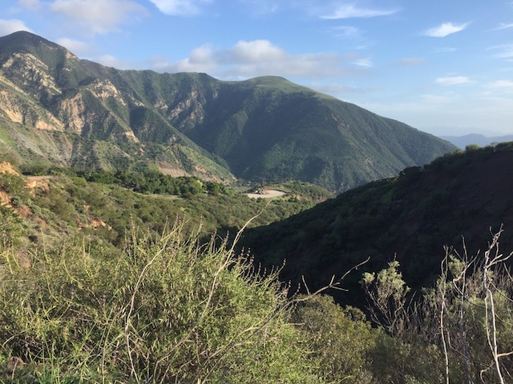
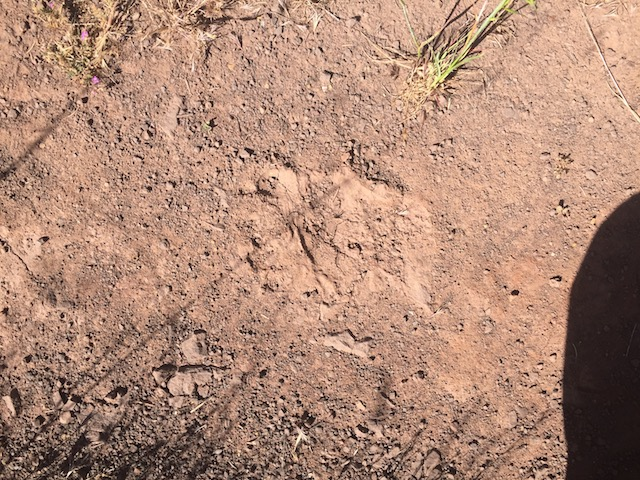

| |
Tar Creek Falls 2017
All right. Now this is an unlisted update. Meaning, the only way to access this update is to have the link (unless you manage to correctly type in the correct URL, which I made unusual and with a lot of random symbols so people can't just type it in). So yeah. This is entirely an update solely for myself, and a select few friends I have chosen to trust to read this update. Not just anyone like with all other updates.
Why is this update private? Because it's a Tar Creek update. And if you remember, Tar Creek Falls closed in November 2014 because fucking assholes (I'm not putting in the force-of-habit censors in a private update) kept polluting the place and this was affecting the condors, so they closed it down for the protection of the condors. This devestated me, both because of littering assholes, but also because Tar Creek is one of the best cliff jumping spots in the world. No really. I discovered it by reading a Top 10 Cliff Jumping Spots in the world list and was shocked to discover a place so close to where I live on the list.
We never went at all during 2015 as not only was the drought bad, but we assumed it would be more enforced then. There was always talk of going anyway, and then in 2016, we took a visit. And it was totally fine. All we need is for someone to drop us off and pick us up so that our car isn't there all day, and they'd notice. So in 2017, we had a whole Tar Creek season, just like before. And with those, we had all those Tar Creek updates. Part of me really wanted to post a Tar Creek update. But I made it private, as it's pretty much an update of us doing something illegal. But I figured that the people reading this update are people who either go to Tar Creek with us, or are people that I'd tell that I still go to Tar Creek.
OMG! You have no idea how much I've missed this place.
Hey Halfway Tree! Long time, no see! =)
Just another naughty thing we're doing. First we pirate music, then we smoke weed, and now we're going Tar Creek Falls! We can't help but be such violent criminals! We're a menace to society! =P
You should be sorry for doing that graffiti assholes! If you want to apologize and get your thoughts out, buy a fucking journal! Don't spray it on nature like a fucking cunt!
Aww, yeah. Tar Creek is flowing so damn beautifully! =)
So glad to be back here!
OMG! It's the 70 ftr! If I could somehow give a waterfall a hug, I would! I've missed you so much!
Urge to jump rising.
Honestly, there's too much water to jump it today. I know that sounds crazy, but it's true. There's too much tow. Oh well. We'll be back.
I know it sounds weird to say this, considering that Tar Creek is home to the 70 ftr, the craziest thing we've done and even more insane than skydiving, bungee jumping, and the SCAD Tower. But while it's true that it does provide the greatest thrills, it also is one of the most relaxing places I've ever been. I could just fall asleep here. It just makes me so damn lazy.
Seriously. Tar Creek is just fucking beautiful.
 HEY JACKASS!! GO SMOKE WEED SOMEWHERE ELSE!! WE DON'T WANT YOU OR YOUR FUCKING GRAFFITI DOWN HERE!!!
HEY JACKASS!! GO SMOKE WEED SOMEWHERE ELSE!! WE DON'T WANT YOU OR YOUR FUCKING GRAFFITI DOWN HERE!!!
"Uh...what the fuck did I just find?"
It's a bike lock. A FUCKING BIKE LOCK!!! WHO THE FUCK JUST LEAVES A BIKE LOCK DOWN HERE!!? We've found a tricycle, used panties, and now a bike lock down here. Combine that with all the disgusting shit we've found at other cliff jumping spots, and we've had it. We're fed up with these littering assholes. I know the project hasn't officially been launched yet, but it's fine to talk about it here since almost everyone who I intend to read this is involved with the project, and the ones who aren't, I'm fine with telling, and probably have already told.
A group of us from Incrediblecoasters, the ones who generally do the outdoors updates, cliff jumping, camping trips, so Cody, Alisa, Dylan, and myself, are working on an anti-litter project called Litterbugs. I know it's hard to get it up and going due to other shit getting in the way. But we've had it with sites like this being ruined by litter. I mean, you have no idea just how bad Hermit Falls is. I only did that one update in 2012. It is so bad now. And we got started when we went to Aztec Falls this year (I'm not posting any links in a secret unlisted update only meant for a small number of people, but you can find that update on the site, and the Aztec Falls update is public for anyone to read). I know Cody mentioned wanting to make the site for it, and I'm working on the official logo for it. I got the first draft of it done. However, it is WAY too shitty to make public and official.
And yeah. But I'm going to redo my official Incrediblecoasters logo first as I'm really embarassed by it, especially since my skills in Photoshop and Illustrator have SIGNIFICANTLY improved since I made it, and it's kind of a disgrace that needs to go ASAP. So that's gonna get remade before Litterbugs is offically announced. So as soon as I get caught up with all those park reviews, then I'm redoing the site logo, and then onto the Litterbugs logo. All while working on a couple screenplays, an independent short film, and job work so I can hopefully fundraise the money to get my ass to Japan for 2018 (THAT TRIP KEEPS GETTING PUSHED BACK AND BACK! IT JUST NEEDS TO FUCKING HAPPEN ASAP!). So yeah. It's gonna take a lot of work. But I'm really hoping that if I work my ass off, I can get Litterbugs launched, as well as the Incrediblecoasters Logo redone, the money for Japan achieved so I can do that trip, as well as a couple other projects done in 2018. So yeah. Get this secret update done ASAP and then BACK TO FUCKING WORK!!!
Oh, ha ha ha. Aliens smoking weed. How about you go back to your home planet, take your weed with you, and then NEVER COME BACK TO PLACES LIKE THIS SO YOU CAN NEVER TAG THEM EVER AGAIN!!!
Seriously, Litterbugs isn't just going to be cleaning up trash. We're also hoping to get graffiti removed as well.

Well, that was a great day at Tar Creek. And we'll be back to jump the 70 ftr.
 We can't allow people into Tar Creek Falls. We're too concerned about litter, pollution, and the safety of the condors. No people are allowed in Tar Creek Falls.
We can't allow people into Tar Creek Falls. We're too concerned about litter, pollution, and the safety of the condors. No people are allowed in Tar Creek Falls.
What's that? You're an oil company that wants to exploit the land, pollute, and ruin the envioment and contribute to climate change, all for the sake of short term profits for you at the expense of the entire planet? Go right ahead. Keep on drilling! Drill baby drill!
GAH!!! Look, I totally understand wanting to protect the condors. I totally understand wanting to keep the littering assholes out. That's part of the reason we're trying to start Litterbugs and hoping to launch it next year. But you DON'T get to claim to be for the enviroment and local wildlife, and then allow oil companies to just drill and exploit and pollute. FUCKING HYPOCRITES!!!! GAH!!!!!
All right. We're now onto Visit #2 to Tar Creek Falls.
Ahh. We made it to the Cascade Ponds.
We generally shouldn't spend much time here as this is the area where most people go, and therefor, where they generally patrol. But there's time for a quick slide down the small waterslide (Still sad that the big waterslide no longer slidable thanks to erosion. Stupid nature).
OH COME ON!!! One the one hand, I love how relaxed they are at enforcing this as it allows us to go easily and not worry about getting caught. It's like pirating music or smoking weed prior to Prop 64 passing last year (one of the few good things to come from that nightmare hellish night last November that doomed us all). But on the other hand, I really wish other people were actually afraid of going and scared of getting caught, so fuckers like this don't come down and pollute and ruin the place. Well, Litterbugs will take care of these assholes.
Shh. Don't tell anyone we're here Mr. Caterpillar. ;)
YES!!! IT HAPPNED AGAIN!!! I JUMPED THE 70 FTR!!! AND IT FEELS SO GOOD!!!

All right. Visit #3. Uh...correct me if I'm wrong. But it looks like those are Black Bear paws. Wouldn't be the first time we saw a Black Bear in Tar Creek Falls. =)
SHOO!!! SHOO CONDORS!!! THIS IS OUR SPOT NOW BITCHES!!! =P
♫Light up the sky, shy violet angel eyes♫
Hello snakies! How's it going!? =)
 DOUBLE ON THE 50 FTR!!!
DOUBLE ON THE 50 FTR!!!
All right Cody. You didn't jump the 70 ftr last time and you didn't jump it in 2016. You haven't jumped since 2014. It's time for you to throw yourself off this cliff once again.
Ahh, there you go.
Jumping this again feels like home again.
Unlike with roller coasters or any ride at a theme park, when jumping the 70 ftr, there's ALWAYS a moment of "OH SHIT!!!". Every single time, that gut feeling of "YOU'RE A FUCKING LUNATIC FOR JUMPING OFF A 7 STORY CLIFF!!!" is there. And I love it so much. Such a rush.
All right. Finally, we're on Visit #4. And you know what? Fuck it! It's been so long. Let's do some Cascade jumps.
Yeah. They're small. But they're still a lot of fun. Especially when combined with the water slide.
Quick little warning with the 3rd Cascade. Watch where you jump. You just might jump into really shallow water. I mean, the 3rd Cascade has always been shallow. But this is head not even going underwater shallow. It wasn't dangerous and never hurt. But it was really awkward and probably would've been bad if it wasn't for the surface being silt.
Well, Dylan was unable to jump the 70 ftr today as it had been so long since he last jumped it, that the anxiety too much. Cody and I mentioned that the pain from the anxiety of jumping it hurts WAY more than a bad landing on the 70 ftr. But even that couldn't break the psychological barrier. But hey. He was not only able to jump the 50 ftr, but jump it from freaking above, running and jumping over the landing portion (I guess that made it a 55 ftr). Oh, and nice shot of Dylan landing. DYLAN HIT WATER!!!
And that was our Tar Creek Falls 2017 Season. I missed this place so much, and despite it being illegal, this was one of our best years at Tar Creek. We got in so many more jumps and thanks to the drought officailly being over, the water was really flowing, and it was back to its old self. If you're reading this, you're a jumper as well who joins us, or a really good friend whom I trust to read this. Maybe someday, if the laws change, I might open this update up to the public, but for now, it's a secret little update showcasing our favorite cliff jumping spot and some of the best jumps ever. I can't wait to come back in 2018. =)
|